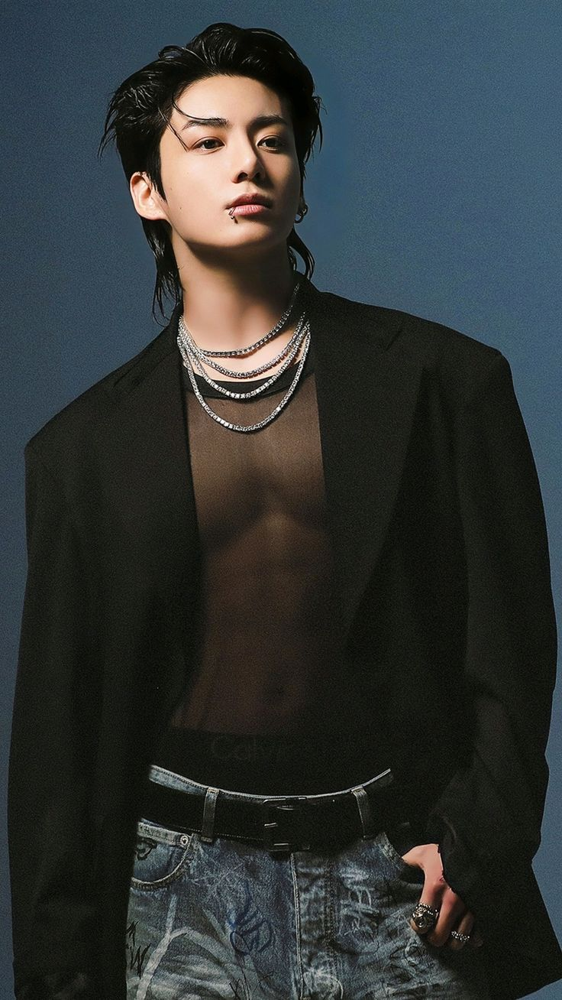
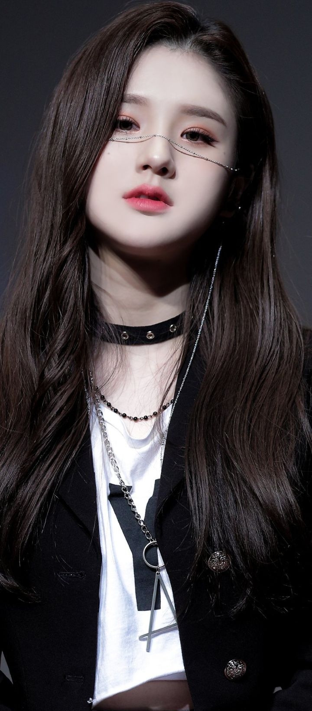
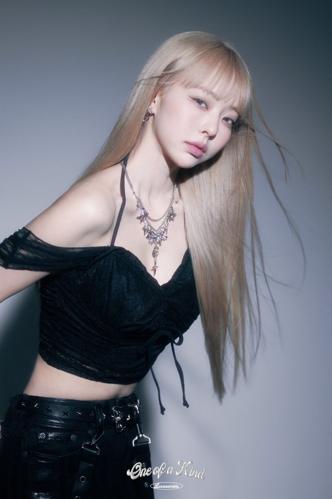
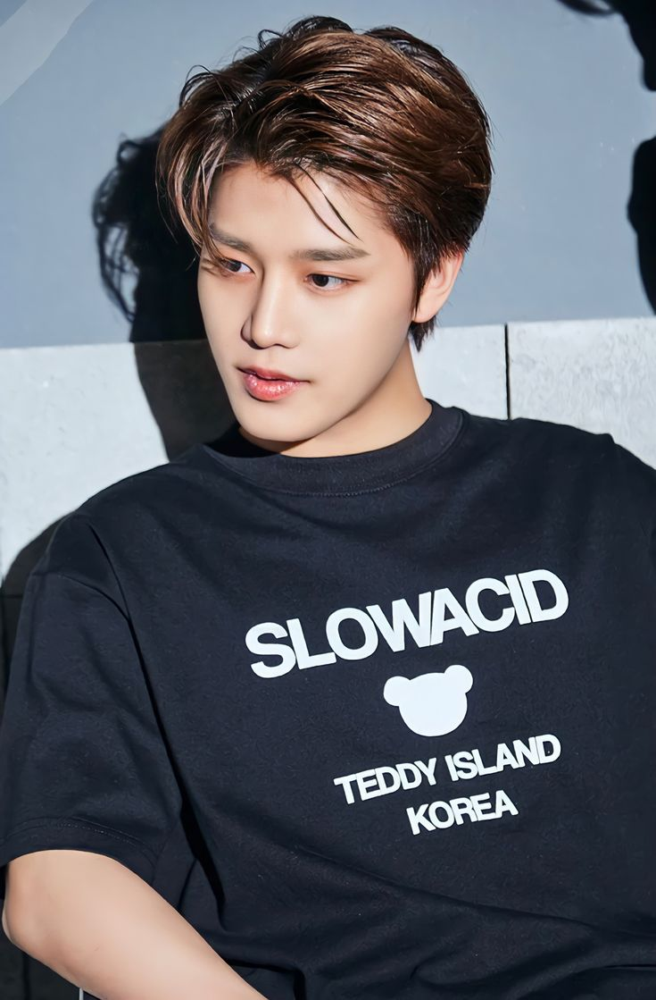
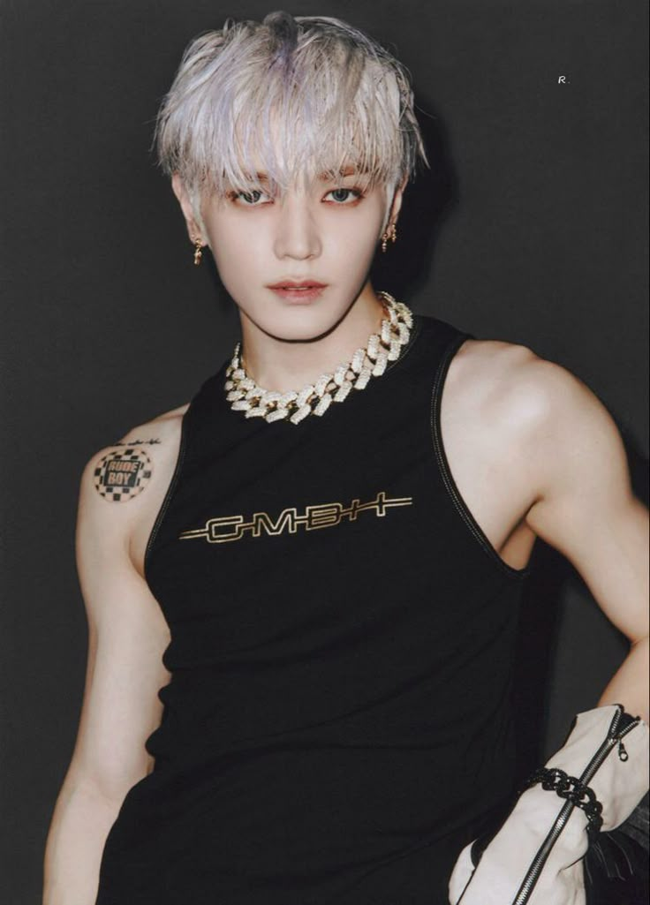
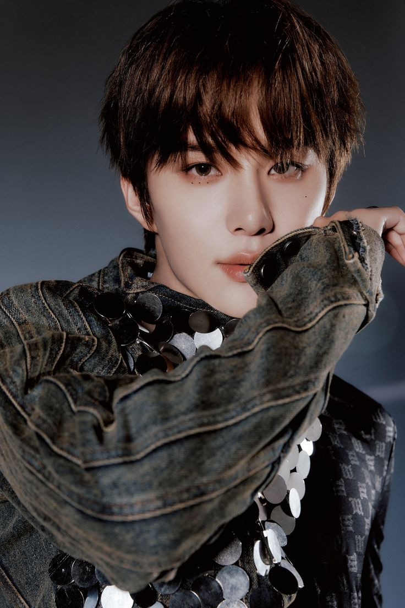
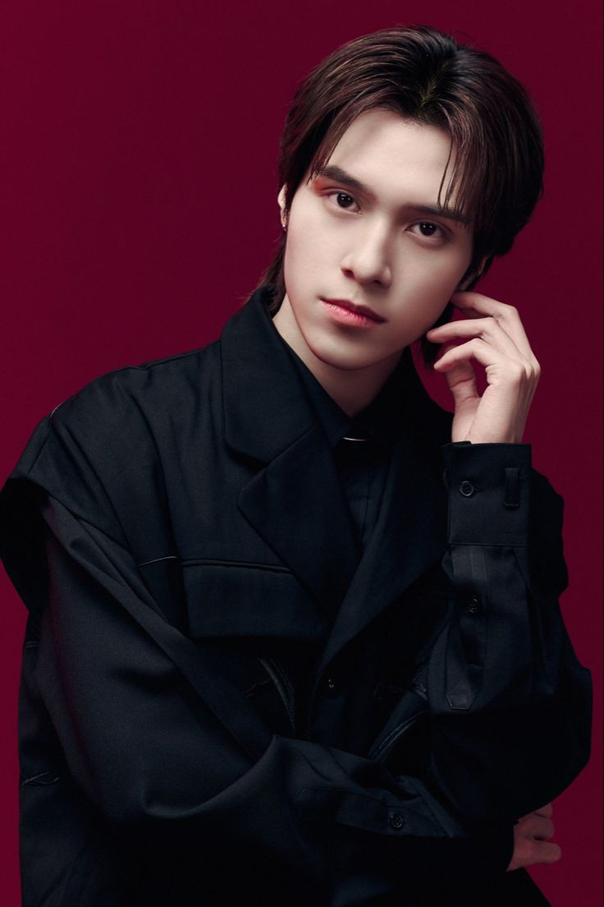

K-pop stars
BLACKPINK - miembros
►JISOO
| Nombre | JISOO (Kim Ji-soo) |  |
| Nacimiento | 3 de enero de 1995 (30 años) | |
| Grupo | BLACKPINK | |
| Género | Femenino | |
| Ocupación | Cantante, actriz | |
| Nacionalidad | Surcoreana | |
| Altura | 1,62 m |
►JENNIE
| Nombre | JENNIE (Kim Jennie) |  |
| Nacimiento | 16 de enero de 1996 (29 años) | |
| Grupo | BLACKPINK | |
| Género | Femenino | |
| Ocupación | Rapera, cantante, modelo, actriz | |
| Nacionalidad | Surcoreana | |
| Altura | 1,63 m |
►ROSÉ
| Nombre | ROSÉ (Park Chae-young / Roseanne Park) |  |
| Nacimiento | 11 de febrero de 1997 (28 años) | |
| Grupo | BLACKPINK | |
| Género | Femenino | |
| Ocupación | Cantante, bailarina | |
| Nacionalidad | Neozelandesa - Surcoreana | |
| Altura | 1,68 m |
►LISA
| Nombre | LISA (Lalisa Manoban) | |
| Nacimiento | 27 de marzo de 1997 (28 años) | |
| Grupo | BLACKPINK | |
| Género | Femenino | |
| Ocupación | Rapera, bailarina, cantante, modelo | |
| Nacionalidad | Tailandesa | |
| Altura | 1,67 m |
BTS - miembros
►JUNGKOOK
| Nombre | JUNGKOOK(Jeon Jung-kook) |  |
| Nacimiento | 1 de septiembre de 1997 (27 años) | |
| Grupo | BTS | |
| Genero | Masculino | |
| Ocupación | cantante surcoreano | |
| Nacionalidad | Surcoreana | |
| Altura | Altura 1,78 m |
►JIN
| Nombre | JIN(Kim Seok-Jin) |  |
| Nacimiento | 4 de diciembre de 1992 (edad 32 años) | |
| Grupo | BTS | |
| Genero | Masculino | |
| Ocupación | Cantante y compositor de canciones | |
| Nacionalidad | Surcoreana | |
| Altura | Altura 1,79 m |
►V
| Nombre | V(Kim Taehyung) |  |
| Nacimiento | 30 de diciembre de 1995 (29 años) | |
| Grupo | BTS | |
| Genero | Masculino | |
| Ocupación | Cantante, compositor, actor, modelo, bailarín, presentador | |
| Nacionalidad | Surcoreana | |
| Altura | Altura 1,78 m |
►J-HOPE
| Nombre | J-HOPE(Jung Ho-Seok) |  |
| Nacimiento | 18 de febrero de 1994 (31 años) | |
| Grupo | BTS | |
| Genero | Masculino | |
| Ocupación | Bailarín, coreógrafo, rapero, cantante, MC, compositor, productor, modelo | |
| Nacionalidad | Surcoreana | |
| Altura | Altura 1,79 m |
►JIMIN
| Nombre | JIMIN(Park Ji-min) |  |
| Nacimiento | 13 de octubre de 1995 (29 años) | |
| Grupo | BTS | |
| Genero | Masculino | |
| Ocupación | Cantante, bailarín | |
| Nacionalidad | Surcoreana | |
| Altura | Altura 1,74 m |
►RM
| Nombre | RM(Kim Nam-joon) |  |
| Nacimiento | 12 de septiembre de 1994 (30 años) | |
| Grupo | BTS | |
| Genero | Masculino | |
| Ocupación | Rapero, cantante, compositor, productor | |
| Nacionalidad | Surcoreana | |
| Altura | Altura 1,81 m |
►SUGA
| Nombre | SUGA(Min Yoon-gi) |  |
| Nacimiento | 9 de marzo de 1993 (32 años) | |
| Grupo | BTS | |
| Genero | Masculino | |
| Ocupación | Rapero, cantante, compositor, productor, bailarín | |
| Nacionalidad | Surcoreana | |
| Altura | Altura 1,76 m |
EXO - miembros
►XIUMIN
| Nombre | XIUMIN (Kim Min-seok) |  |
| Nacimiento | 26 de marzo de 1990 (35 años) | |
| Grupo | EXO | |
| Género | Masculino | |
| Ocupación | Cantante, actor | |
| Nacionalidad | Surcoreana | |
| Altura | 1,73 m |
►SUHO
| Nombre | SUHO (Kim Jun-myeon) |  |
| Nacimiento | 22 de mayo de 1991 (34 años) | |
| Grupo | EXO | |
| Género | Masculino | |
| Ocupación | Cantante, actor | |
| Nacionalidad | Surcoreana | |
| Altura | 1,73 m |
►BAEKHYUN
| Nombre | BAEKHYUN (Byun Baek-hyun) |  |
| Nacimiento | 6 de mayo de 1992 (33 años) | |
| Grupo | EXO | |
| Género | Masculino | |
| Ocupación | Cantante, compositor, actor | |
| Nacionalidad | Surcoreana | |
| Altura | 1,74 m |
►LAY
| Nombre | LAY (Zhang Yixing) |  |
| Nacimiento | 7 de octubre de 1991 (33 años) | |
| Grupo | EXO (inactivo) | |
| Género | Masculino | |
| Ocupación | Cantante, bailarín, actor, productor | |
| Nacionalidad | China | |
| Altura | 1,77 m |
►KRIS
| Nombre | KRIS (Wu Yifan) |  |
| Nacimiento | 6 de noviembre de 1990 (34 años) | |
| Grupo | EXO (exmiembro) | |
| Género | Masculino | |
| Ocupación | Rapero, cantante, actor | |
| Nacionalidad | China | |
| Altura | 1,87 m |
►LUHAN
| Nombre | LUHAN (Lu Han) |  |
| Nacimiento | 20 de abril de 1990 (35 años) | |
| Grupo | EXO (exmiembro) | |
| Género | Masculino | |
| Ocupación | Cantante, actor | |
| Nacionalidad | China | |
| Altura | 1,78 m |
►TAO
| Nombre | TAO (Huang Zitao) |  |
| Nacimiento | 2 de mayo de 1993 (32 años) | |
| Grupo | EXO (exmiembro) | |
| Género | Masculino | |
| Ocupación | Rapero, cantante, actor | |
| Nacionalidad | China | |
| Altura | 1,83 m |
►CHEN
| Nombre | CHEN (Kim Jong-dae) |  |
| Nacimiento | 21 de septiembre de 1992 (32 años) | |
| Grupo | EXO | |
| Género | Masculino | |
| Ocupación | Cantante | |
| Nacionalidad | Surcoreana | |
| Altura | 1,73 m |
►CHANYEOL
| Nombre | CHANYEOL (Park Chan-yeol) |  |
| Nacimiento | 27 de noviembre de 1992 (32 años) | |
| Grupo | EXO | |
| Género | Masculino | |
| Ocupación | Rapero, cantante, compositor, actor | |
| Nacionalidad | Surcoreana | |
| Altura | 1,86 m |
►D.O.
| Nombre | D.O. (Do Kyung-soo) |  |
| Nacimiento | 12 de enero de 1993 (32 años) | |
| Grupo | EXO | |
| Género | Masculino | |
| Ocupación | Cantante, actor | |
| Nacionalidad | Surcoreana | |
| Altura | 1,73 m |
►KAI
| Nombre | KAI (Kim Jong-in) |  |
| Nacimiento | 14 de enero de 1994 (31 años) | |
| Grupo | EXO | |
| Género | Masculino | |
| Ocupación | Cantante, bailarín, modelo, actor | |
| Nacionalidad | Surcoreana | |
| Altura | 1,82 m |
►SEHUN
| Nombre | SEHUN (Oh Se-hun) |  |
| Nacimiento | 12 de abril de 1994 (31 años) | |
| Grupo | EXO | |
| Género | Masculino | |
| Ocupación | Rapero, bailarín, actor, modelo | |
| Nacionalidad | Surcoreana | |
| Altura | 1,83 m |
GOT7 - miembros
►JB
| Nombre | JB (Lim Jae-beom) |  |
| Nacimiento | 6 de enero de 1994 (31 años) | |
| Grupo | GOT7 | |
| Género | Masculino | |
| Ocupación | Cantante, compositor, productor | |
| Nacionalidad | Surcoreana | |
| Altura | 1,79 m |
►MARK
| Nombre | MARK (Mark Tuan) |  |
| Nacimiento | 4 de septiembre de 1993 (31 años) | |
| Grupo | GOT7 | |
| Género | Masculino | |
| Ocupación | Rapero, cantante, modelo | |
| Nacionalidad | Estadounidense | |
| Altura | 1,75 m |
►JACKSON
| Nombre | JACKSON (Jackson Wang) |  |
| Nacimiento | 28 de marzo de 1994 (31 años) | |
| Grupo | GOT7 | |
| Género | Masculino | |
| Ocupación | Rapero, cantante, productor, empresario | |
| Nacionalidad | Hongkonés | |
| Altura | 1,74 m |
►JINYOUNG
| Nombre | JINYOUNG (Park Jin-young) |  |
| Nacimiento | 22 de septiembre de 1994 (30 años) | |
| Grupo | GOT7 | |
| Género | Masculino | |
| Ocupación | Cantante, actor, escritor | |
| Nacionalidad | Surcoreana | |
| Altura | 1,78 m |
►YOUNGJAE
| Nombre | YOUNGJAE (Choi Young-jae) |  |
| Nacimiento | 17 de septiembre de 1996 (28 años) | |
| Grupo | GOT7 | |
| Género | Masculino | |
| Ocupación | Cantante, compositor | |
| Nacionalidad | Surcoreana | |
| Altura | 1,77 m |
►BAMBAM
| Nombre | BAMBAM (Kunpimook Bhuwakul) |  |
| Nacimiento | 2 de mayo de 1997 (28 años) | |
| Grupo | GOT7 | |
| Género | Masculino | |
| Ocupación | Rapero, cantante, productor | |
| Nacionalidad | Tailandesa | |
| Altura | 1,78 m |
►YUGYEOM
| Nombre | YUGYEOM (Kim Yu-gyeom) |  |
| Nacimiento | 17 de noviembre de 1997 (27 años) | |
| Grupo | GOT7 | |
| Género | Masculino | |
| Ocupación | Cantante, bailarín, compositor | |
| Nacionalidad | Surcoreana | |
| Altura | 1,82 m |
LOONA - miembros
►HEEJIN
| Nombre | HEEJIN (Jeon Hee-jin) |  |
| Nacimiento | 19 de octubre de 2000 (24 años) | |
| Grupo | LOONA | |
| Género | Femenino | |
| Ocupación | Cantante, bailarina | |
| Nacionalidad | Surcoreana | |
| Altura | 1,61 m |
►HYUNJIN
| Nombre | HYUNJIN (Kim Hyun-jin) |  |
| Nacimiento | 15 de noviembre de 2000 (24 años) | |
| Grupo | LOONA | |
| Género | Femenino | |
| Ocupación | Cantante, bailarina | |
| Nacionalidad | Surcoreana | |
| Altura | 1,63 m |
►HASEUL
| Nombre | HASEUL (Jo Ha-seul) |  |
| Nacimiento | 18 de agosto de 1997 (27 años) | |
| Grupo | LOONA | |
| Género | Femenino | |
| Ocupación | Cantante, líder | |
| Nacionalidad | Surcoreana | |
| Altura | 1,60 m |
►YEOJIN
| Nombre | YEOJIN (Im Yeo-jin) |  |
| Nacimiento | 11 de noviembre de 2002 (22 años) | |
| Grupo | LOONA | |
| Género | Femenino | |
| Ocupación | Cantante, rapera | |
| Nacionalidad | Surcoreana | |
| Altura | 1,55 m |
►VIVI
| Nombre | VIVI (Wong Kahei) |  |
| Nacimiento | 9 de diciembre de 1996 (28 años) | |
| Grupo | LOONA | |
| Género | Femenino | |
| Ocupación | Cantante | |
| Nacionalidad | Hongkonesa | |
| Altura | 1,60 m |
►KIM LIP
| Nombre | KIM LIP (Kim Jung-eun) |  |
| Nacimiento | 10 de febrero de 1999 (26 años) | |
| Grupo | LOONA | |
| Género | Femenino | |
| Ocupación | Cantante, bailarina | |
| Nacionalidad | Surcoreana | |
| Altura | 1,62 m |
►JINSOUL
| Nombre | JINSOUL (Jung Jin-sol) |  |
| Nacimiento | 13 de junio de 1997 (28 años) | |
| Grupo | LOONA | |
| Género | Femenino | |
| Ocupación | Cantante, rapera | |
| Nacionalidad | Surcoreana | |
| Altura | 1,65 m |
►CHOERRY
| Nombre | CHOERRY (Choi Ye-rim) |  |
| Nacimiento | 4 de junio de 2001 (24 años) | |
| Grupo | LOONA | |
| Género | Femenino | |
| Ocupación | Cantante, rapera | |
| Nacionalidad | Surcoreana | |
| Altura | 1,61 m |
►YVES
| Nombre | YVES (Ha Soo-young) |  |
| Nacimiento | 24 de mayo de 1997 (28 años) | |
| Grupo | LOONA | |
| Género | Femenino | |
| Ocupación | Cantante, bailarina | |
| Nacionalidad | Surcoreana | |
| Altura | 1,66 m |
►CHUU
| Nombre | CHUU (Kim Ji-woo) |  |
| Nacimiento | 20 de octubre de 1999 (25 años) | |
| Grupo | LOONA | |
| Género | Femenino | |
| Ocupación | Cantante, actriz, personalidad de TV | |
| Nacionalidad | Surcoreana | |
| Altura | 1,60 m |
►GO WON
| Nombre | GO WON (Park Chae-won) |  |
| Nacimiento | 19 de noviembre de 2000 (24 años) | |
| Grupo | LOONA | |
| Género | Femenino | |
| Ocupación | Cantante | |
| Nacionalidad | Surcoreana | |
| Altura | 1,62 m |
►OLIVIA HYE
| Nombre | OLIVIA HYE (Son Hye-joo) |  |
| Nacimiento | 13 de noviembre de 2001 (23 años) | |
| Grupo | LOONA | |
| Género | Femenino | |
| Ocupación | Cantante, bailarina | |
| Nacionalidad | Surcoreana | |
| Altura | 1,66 m |
NCT - miembros
►JAEHYUN
| Nombre | JAEHYUN | |
| Rol | Rapero | |
| Años activo | Desde 2016 |
►TAEIL
| Nombre | TAEIL |  |
| Rol | Voz | |
| Años activo | 2016 – 2024 |
►LUCAS
| Nombre | LUCAS |  |
| Rol | Rapero | |
| Años activo | 2018 – 2023 |
►DOYOUNG
| Nombre | DOYOUNG |  |
| Rol | Voz | |
| Años activo | Desde 2016 |
►MARK LEE
| Nombre | MARK LEE |  |
| Rol | Rapero | |
| Años activo | Desde 2016 |
►HAECHAN
| Nombre | HAECHAN |  |
| Rol | Bailarín | |
| Años activo | Desde 2016 |
►TAEYONG
| Nombre | TAEYONG |  |
| Rol | Rapero | |
| Años activo | Desde 2016 |
►YUTA
| Nombre | YUTA |  |
| Rol | Bailarín | |
| Años activo | Desde 2016 |
►TEN
| Nombre | TEN |  |
| Rol | Bailarín | |
| Años activo | Desde 2016 |
►WINWIN
| Nombre | WINWIN |  |
| Rol | Bailarín | |
| Años activo | Desde 2016 |
►JUNGWOO
| Nombre | JUNGWOO |  |
| Rol | Voz | |
| Años activo | Desde 2018 |
►JOHNNY
| Nombre | JOHNNY |  |
| Rol | Rapero | |
| Años activo | Desde 2017 |
►RENJUN
| Nombre | RENJUN |  |
| Rol | Voz | |
| Años activo | Desde 2016 |
►JISUNG
| Nombre | JISUNG |  |
| Rol | Bailarín | |
| Años activo | Desde 2016 |
►CHENLE
| Nombre | CHENLE |  |
| Rol | Voz | |
| Años activo | Desde 2016 |
►HENDERY
| Nombre | HENDERY |  |
| Rol | Rapero | |
| Años activo | Desde 2019 |
►XIAOJUN
| Nombre | XIAOJUN |  |
| Rol | Voz | |
| Años activo | Desde 2019 |
►YANGYANG
| Nombre | YANGYANG | |
| Rol | Rapero | |
| Años activo | Desde 2019 |
►TAEYONG
| Nombre | TAEYONG | |
| Rol | Rapero | |
| Años activo | Desde 2016 |
►TEN
| Nombre | TEN | |
| Rol | Bailarín | |
| Años activo | Desde 2016 |
Red Velvet - miembros
►IRENE
| Nombre | IRENE (Bae Joo-hyun) |  |
| Nacimiento | 29 de marzo de 1991 (34 años) | |
| Grupo | Red Velvet | |
| Género | Femenino | |
| Ocupación | Cantante, actriz, presentadora | |
| Nacionalidad | Surcoreana | |
| Altura | 1,60 m |
►SEULGI
| Nombre | SEULGI (Kang Seul-gi) |  |
| Nacimiento | 10 de febrero de 1994 (31 años) | |
| Grupo | Red Velvet | |
| Género | Femenino | |
| Ocupación | Cantante, bailarina | |
| Nacionalidad | Surcoreana | |
| Altura | 1,62 m |
►WENDY
| Nombre | WENDY (Son Seung-wan) |  |
| Nacimiento | 21 de febrero de 1994 (31 años) | |
| Grupo | Red Velvet | |
| Género | Femenino | |
| Ocupación | Cantante, presentadora de radio | |
| Nacionalidad | Surcoreana / Canadiense | |
| Altura | 1,60 m |
►JOY
| Nombre | JOY (Park Soo-young) |  |
| Nacimiento | 3 de septiembre de 1996 (28 años) | |
| Grupo | Red Velvet | |
| Género | Femenino | |
| Ocupación | Cantante, actriz | |
| Nacionalidad | Surcoreana | |
| Altura | 1,68 m |
►YERI
| Nombre | YERI (Kim Ye-rim) |  |
| Nacimiento | 5 de marzo de 1999 (26 años) | |
| Grupo | Red Velvet | |
| Género | Femenino | |
| Ocupación | Cantante, actriz | |
| Nacionalidad | Surcoreana | |
| Altura | 1,60 m |